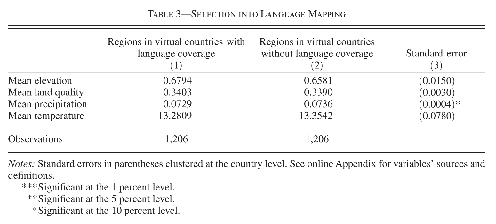

(ArcGIS 10 for Economics Research)
Masayuki Kudamatsu
9 November, 2018
Press SPACE to proceed.
To go back to the previous slide, press SHIFT+SPACE.
Summary statistics of raster data value within each polygon
i.e. Merge polygons with raster data
Examples:
More examples:
Mean nighttime luminosity within:
The following summary statistics can be obtained:
For integer rasters only:
Michalopoulos (2012): probably the most ingenious application of zonal statsitics (and ArcGIS in general)
1. Michalopoulos (2012)
2. Virtual country data
3. Adjacent cell pair data
Did geographic diversity cause ethnic diversity?
Important?
Original?
Feasible?
Spatial distribution of languages
Suitability for agriculture (Ramankutty et al. 2002)
Elevation and other geography variables
Omitted variable bias in cross-country regression
Panel data analysis: infeasible
Global raster data allows for sub-national district analysis
But... sub-national district boundaries: endogenous
Solution 1: cross-"virtual country" regression
Solution 2: Dyadic regression
Neither is feasible w/o GIS
\begin{align*} ln(\#Languages_i) = & \ \beta_0 + \beta_1 Latitude_i \\ & + \beta_2 SD(Elevation)_i \\ & + \beta_3 SD(LandQuality)_i \\ & + \boldsymbol{x}'_{i}\boldsymbol{\beta_4} + \varepsilon_{i} \end{align*}
| $Latitude_i$ | Literature has found its association w/ ethnic diversity |
| $\boldsymbol{x}_i$ | Can include country FE |
We will learn how to calculate $SD(LandQuality)_i$
Clustered at country level
Conley's (1999) method can also be used (cf. Lec 3)
| Dependent Variable: ln(# of languages) | ||||
| Sample | All | Tropics | Non-tropics | |
|---|---|---|---|---|
| SD(land quality) | 0.116*** | 0.103** | 0.173*** | |
| [0.033] | [0.048] | [0.055] | ||
| SD(elevation) | 0.082*** | 0.118** | 0.093** | |
| [0.030] | [0.057] | [0.043] | ||
| Country FE | YES | YES | YES | |
| Other controls | YES | YES | YES | |
| # observations | 1663 | 536 | 1127 | |
| Standard errors clustered at country level. | ||||
| * significant at 10%, ** 5%, *** 1%. | ||||
Unit of analysis: pair of neighboring cells $ij$
\begin{align*} \%CommonLanguages_{ij} = & \ \gamma_0 + \gamma_1 \Delta(LandQuality)_{ij} \\ & + \gamma_2 \Delta(Elevation)_{ij} \\ & + \boldsymbol{x}'_{ij}\boldsymbol{\gamma_3} + \mu_i + \nu_j + \xi_{ij} \end{align*}
| $\mu_i, \nu_j$ | Cell FEs for $i$ and $j$ |
| Dependent Variable: % Common Languages | ||||
| Sample | All | Africa | Europe | Asia |
|---|---|---|---|---|
| $\Delta$LandQuality | -0.038*** | -0.054*** | -0.048** | -0.056*** |
| [0.012] | [0.018] | [0.021] | [0.016] | |
| $\Delta$Elevation | -0.051*** | -0.050*** | -0.046** | -0.053*** |
| [0.006] | [0.016] | [0.022] | [0.009] | |
| Cell FE | YES | YES | YES | YES |
| Controls | YES | YES | YES | YES |
| Observations | 156570 | 35305 | 11975 | 74830 |
| Standard errors clustered at country level. | ||||
| * significant at 10%, ** 5%, *** 1%. | ||||
1. Launch ArcMap 10 (it takes time)
2. Download the zipped dataset for Lecture 5
3. Save it to Desktop (C:\\Users\\yourname\\Desktop)
4. Right-click it and choose 7-Zip > Extract to "Lecture5\"
C:\\Users\\yourname\\Desktop\\Lecture5
In the input/ folder...
5a. Right-click suit.zip (agricultural suitability raster) and choose 7-Zip > Extract to "suit\"
5b. Right-click the following zipped data and choose 7-Zip > Extract Here
gadm36_0.zip (country polygons)
GREG.zip (ethnolinguistic group polygons)
Now in ArcMap's Catalogue Window:
6. Establish connection to data folder
7. Prepare the Model Builder
Browse GREG.shp (Geo-referencing of Ethnic Groups data)
Same language group split into several polygons if:
$\Rightarrow$ Three fields for language group code/name
In this lecture, we assume each polygon represents one language group
For how to make each language has only one polygon, see:
Model: solutions4exercises/models.tbx/cleanGREG
Python script: solutions4exercises/cleanGREG.py
Now browse the "suitability for agriculture" raster data
It has no coordinate system assigned.
We need to assign it ourselves, by looking at the meta data
Which geo-processing tool(s) should we use?
Since Define Projection overwrites the input file, we should make a copy
The Copy Features tool works only with vector data
For raster data, we use the Copy Raster tool
So let's edit models.tbx/cleandata
Input Raster: ...\Lecture5\input\suit\suit
Output Raster Dataset: ...\Lecture5\output\landquality.tif
Without running the model, export and edit a Python script. Then run the script.
Model Python script: solutions4exercise/cleandata.py
Unit of observations: Virtual country polygons
Dependent variable: # of languages spoken
Regressor: Standard deviation of land quality
We now create these data by editing exercises1-3
Geo-processing tools:
1. Create Fishnet + Define Projection (cf. Lecture 2)
2. Add Field + Calculate Field
Output Feature Class: ...\Lecture5\temporary\fishnet25.shp
Template Extent (see p. 1522)
Top: 85
Left: -180
Right: 180
Bottom: -65
$\Rightarrow$ Automatically fill in Fishnet Origin Coordinate and Y-Axis Coordinate
Cell Size Width: 2.5
Cell Size Height: 2.5
Number of Rows: 0
Number of Columns: 0
$\Rightarrow$ Automatically calculate # of rows/columns given the extent and cell size
Uncheck "Create Label Points"
Geometry Type: POLYGON
What coordinate system should we assign to the fishnet?
Same one as other spatial datasets
$\Rightarrow$ Check the coordinate system of GREG
Input Dataset or Feature Class: fishnet25.shp
Coordinate System: GCS_WGS_1984
NOTE: This tool overwrites the input data.
Now save and run the Model.
Browse the attribute table of fishnet25.shp.
Fields created:
FID: unique integer identifier starting from 0
Id: all values are 0...
We need virtual country ID for merging data in Stata
Field name FID is used for every shapefile...
$\Rightarrow$ Create your own ID for virtual countries
To create a new field, we need two tools:
Input Table: fishnet25.shp (2)
Field Name: cell25_id
Field Type: SHORT
NOTE: This tool overwrites the input data.
Input Table: fishnet25.shp (3)
Field Name: cell25_id
Expression: !FID! + 1
Expression Type: PYTHON_9.3
NOTE: This tool overwrites the input data.
Now save and run the Model.
Browse the output attribute table.
Is everything as expected?
Simplest approach: Spatial Join (JOIN_ONE_TO_MANY)
collapse (count) ..., by(cell25_id)
Alternative approach: Intersect + Dissolve
Michalopoulos (2012, p. 1516): "... geographic measures are calculated focusing on regions with linguistic coverage ..."
$\Rightarrow$ Preferred approach in this context
Also allows you to create a map of # of languages spoken
Input Features:
...\Lecture5\input\GREG.shp
Output Feature Class: ...\Lecture5\temporary\intersect.shp
Join Attributes: ALL
Output Type: INPUT
Input Features: intersect.shp
Output Feature Class: ...\Lecture5\temporary\vcountry.shp
Dissolve_Field(s): cell25_id
Statistics Field(s): FID_GREG
Statistic Type: COUNT
Check "Create multipart features"
Now save and run the Model.
To check if # of languages spoken is properly calculated:
fishnet25.shp (make polygon color unfilled)
$\Rightarrow$ It's 4
vcountry.shp
Polygons in GREG.shp are slightly overlapping over each other
GREG.shp
$\Rightarrow$ Intersect creates tiny polygons along the border
Solution: set XY Tolerance a little bit higher in the Intersect tool
Size of a square treated as a point in geo-processing
Default: 0.001 meters
Increasing XY Tolerance a bit (say, to 1 meter) usually solves the problem of Intersect, Spatial Join etc.
Input Features: GREG.shp, fishnet25.shp (3)
Output Feature Class: ...\Lecture5\temporary\intersect.shp
Join Attributes: ALL
XY Tolerance: 1 Meters
Output Type: INPUT
Does competition improve school quality?
# of streams within city: IV for # of school districts
Similar idea was used by Bai and Jia (2016)
Inputs:
Geo-processing tool: Zonal Statistics as Table
Creates a table where
Output is NOT the attribute table to input polygons
Don't confuse with another tool called Zonal Statistics
Cannot use Zonal Statistics as Table? See next slide:
Zonal Statistics as Table is part of the Spatial Analyst extension.
By default, you're not allowed to use it.
To activate, click in the menu bar Customize > Extensions... and check Spatial Analyst
Input raster or feature zone data: vcountry.shp
Zone field: cell25_id
Input value raster: output/landquality.tif
Output table: ...\Lecture5\temporary\landquality25.dbf
Check "Ignore NoData in calculations"
Statistics type: ALL
...\Lecture5\output\landquality25.xls
Here we cannot use Export Feature Attribute to ASCII
Now save and run the Model.
Browse the output Excel file.
OID: just the row ID
cell25_id: use this to merge in Stata
COUNT: # of raster cells used for calculation
AREA: in degrees and thus useless
How to obtain zonal stats for areas without language data?
Solution:
Union + Select + Zonal Statistics as Table
See models.tbx\exercises1-3
in the solutions4exercises\ folder
"In the regression analysis, virtual countries of at least 3,000 inhabitants are included." (p. 1523)
$\Rightarrow$ Obtain population for each virtual country
Which geo-processing tool(s) should you use?
Reviewing Lecture 4 allows you to create:
1. Absolute latitude
2. Migratory distance from East Africa (hint)
3. Surface area (hint)
4. Sea distance (hint)
5. Water area (hint)
1. Data at 0.5°x0.5° cell level
2. List of adjacent cell pairs
1. Create cell polygons (cf. Exercise 1)
2. Extract language spoken
3. Extract land quality
Output Feature Class: ...\Lecture5\temporary\fishnet05.shp
Template Extent
Top: 85
Left: -180
Right: 180
Bottom: -65
$\Rightarrow$ Automatically fill in Fishnet Origin Coordinate and Y-Axis Coordinate
Cell Size Width: 0.5
Cell Size Height: 0.5
Number of Rows: 0
Number of Columns: 0
$\Rightarrow$ Automatically calculate # of rows/columns given the extent and cell size
Uncheck "Create Label Points"
Geometry Type: POLYGON
Input Dataset or Feature Class: fishnet05.shp
Coordinate System: GCS_WGS_1984
NOTE: This tool overwrites the input data.
Input Table: fishnet05.shp (2)
Field Name: cell05_id
Field Type: LONG
Input Table: fishnet05.shp (3)
Field Name: cell05_id
Expression: !FID! + 1
Expression Type: PYTHON_9.3
NOTE: This tool overwrites the input data.
Use Spatial Join
When exported to Stata, execute:
bysort cell05_id: gen id = _n
reshape wide ..., i(cell05_id) j(id)
to make one row per cell
Target Features: fishnet05.shp (4)
Join Features: ...\Lecture5\input\GREG.shp
Output Feature Class: ...\Lecture5\temporary\cell05.shp
Join Operation: JOIN_ONE_TO_MANY
Uncheck "Keep All Target Features"
We could use Zonal Statistics as Table
But each polygon has only one raster cell
Here we take alternative approach:
Extract raster values from the cell below the point feature
Value -9999 will be assigned if no raster data
This tool also overwrites the input attribute table
cf. Another tool Extract Values To Points does the same thing, but one raster at a time (and field name cannot be chosen)
Input Features: cell05.shp
Output Feature Class: ...\Lecture5\temporary\cell05centroids.shp
Uncheck "Inside"
Input point features: cell05centroids.shp
Input rasters: landquality.tif
Output field name: land_q
We cannot use Table to Excel
$\Rightarrow$ use Export Feature Attributes to ASCII
Input Feature Class: cell05centroids.shp (2)
Value Field: cell05id, G1ID, G2ID, G3ID, land_q
Delimiter: SPACE
Output ASCII File: ...\Lecture5\output\cell05.txt
Check "Add Field Name to Output"
Inputs: 0.5° x 0.5° cell polygons (cf. Exercise #4)
Geo-processing tools: Polygon Neighbors
State capacity in one municipality
$\Rightarrow$ State capacity & prosperity in neighboring municipalities
Input Features: cells05.shp
Output Table: ...\Lecture5\temporary\cell_neighbors.dbf
Report By Field(s): check cell05_id
Uncheck "Include both sides of neighbor relationship"
Run the tool and browse the table
Notice # of rows more than Excel's limit of 65535
$\Rightarrow$ Table to Excel does not work
ArcGIS has no tool to export table as a text file
What should we do?
Solution: Table Select
This tool picks a subset of rows from the input table
$\Rightarrow$ Divide the table into several
Input Table: cell_neighbors.dbf
Output Table: ...\Lecture5\temporary\cell_neighbors1.dbf
Expression: "OID" < 65000
Input Table: cell_neighbors.dbf
Output Table: ...\Lecture5\output\cell_neighbors2.dbf
Expression: "OID" >= 65000 AND "OID" < 130000
And so on until all rows are covered.
Then finally...
Input Table: cell_neighbors1.dbf
Output Excel File: ...\Lecture5\output\cell_neighbors1.xls
And so on, and append them in Stata
Look at models.tbx\exercises4-5
in the solutions4exercises\ folder
When using Spatial Analyst extension tools...
Make sure you add:
arcpy.CheckOutExtension("Spatial")
Otherwise these tools cannot be run.
In the solutions4exercises/ folder, see
exercises1-3.py exercises4-5.py 1. Unique identifier
2. # of features w/i each polygon
3. Summary stats of raster values w/i each polygon
4. Raster value for each point
5. List of adjacent polygon pairs
Do you remember which geo-processing tool(s) you used for each of these tasks?